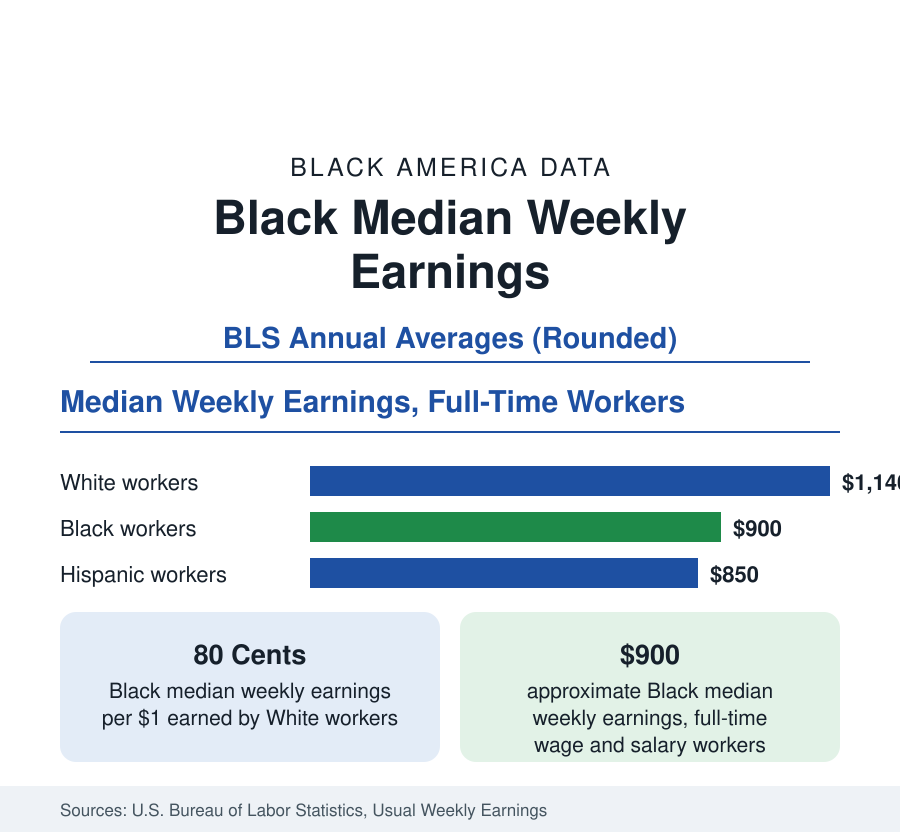

Black Employment
Black Median Weekly Earnings: The 80-Cent Ratio
Black full-time workers earn a median of about $900 a week — roughly 80 cents for every dollar White workers earn. The BLS earnings data by group, gender, and occupation.

The Bureau of Labor Statistics measures the American wage structure every quarter, and its central figure — median usual weekly earnings for full-time wage and salary workers — places Black workers at about $900 per week, against about $1,140 for White workers. The ratio between the two, roughly 80 cents on the dollar, is the earnings counterpart of the unemployment ratio documented in this section: a second structural constant of the Black labor position, narrower than the income and wealth gaps, and remarkably persistent across decades of data. This article explains the measure, reports the comparisons, and summarizes what accounts for the gap in the research literature.
What the Measure Counts
Usual weekly earnings are what a worker reports typically earning in a week before taxes, including overtime, commissions, and tips for those who receive them, drawn from the Current Population Survey. The series covers wage and salary workers only — the self-employed, a small but growing share of Black workers, are excluded — and the figures quoted here are for full-time workers, which removes differences in hours from the comparison. The median, as throughout this reference, is the midpoint worker: half of Black full-time workers earn more than about $900 a week, and half earn less.
The Gap by Gender
The earnings data are published by race and gender together, and the four-way comparison is instructive. White men record the highest median of the four groups; Black men's earnings run at roughly three-quarters of that figure. Black women's median stands below Black men's but at a smaller proportional distance than the overall gender gap in the economy — Black women earn closer to Black men, proportionally, than White women earn to White men — while the widest gap in the table separates Black women from White men. The ordering has been stable for decades, and it interacts with the education data: Black women's higher attainment narrows their gap against Black men without closing their gap against White workers of either gender.
Occupation and Industry
A substantial share of the earnings gap is occupational composition. Black workers are overrepresented, relative to their population share, in service occupations, administrative support, transportation, and health-care support — fields whose median pay sits in the lower half of the distribution — and underrepresented in management, professional, and technical occupations at the top. Within broad occupations, gaps narrow considerably but do not vanish: Black professionals earn less than White professionals on median, and the same holds in management, sales, and production work alike. The occupational distribution itself reflects the attainment pipeline of the education section and the hiring and promotion patterns the research literature examines under audit and correspondence studies.
What Explains the Remaining Gap
Labor economists decompose the raw gap by statistically adjusting for education, experience, occupation, industry, region, and hours. Such adjustments typically account for half to two-thirds of the roughly 20-cent shortfall. The residual — the part not explained by measured characteristics — is the subject of continuing research and dispute: candidate mechanisms include discrimination in hiring and pay-setting, differences in school quality at equal attainment levels, professional-network access, and negotiation dynamics. What the published data establish without controversy is the shape of the outcome: the gap is present at every level of education, widens in dollar terms at the top of the distribution even as it narrows proportionally, and has closed only slowly — on the order of a few cents per decade — across the modern series.
Earnings Are Not Income Are Not Wealth
This reference keeps three related measures separate, and this article's figure is the narrowest of them. Weekly earnings describe one worker's job. Household income, covered in the census section, pools all earners and sources in a home and stands, relative to White households, at about 73 cents on the dollar. Wealth, covered in the business section, accumulates earnings across a lifetime and stands at a far wider gap still. The progression — 80 cents in earnings, 73 cents in income, a dime or less in wealth per dollar — is the single most instructive sequence in Black economic data, and the articles of this reference are organized around explaining each step of it.
The summary figure, then: about $900 a week, about 80 cents on the White dollar, present at every credential level and in nearly every occupation, closing slowly. Earnings are where the Black economic position is strongest relative to the nation — and the distance that remains here is what compounds, through income and wealth, into the wider gaps measured elsewhere in this reference.
More in Black Employment
The Black Unemployment Rate: The Two-to-One Pattern
Black unemployment runs at roughly twice the White rate — 5.5 percent against 3.3 percent in annual averages — a ratio stable across five decades of federal data. How it is measured and why it persists.
Black Labor Force Participation: Working at National Rates
Black labor force participation runs at roughly the national rate — and Black women participate at higher rates than White women. The BLS participation data.
Black Workers by Occupation: Where Black America Works
About 36 percent of Black workers hold management or professional jobs; about one in five works in service occupations. The BLS occupational distribution and its history.
Source: U.S. Bureau of Labor Statistics, Usual Weekly Earnings of Wage and Salary Workers (Current Population Survey).